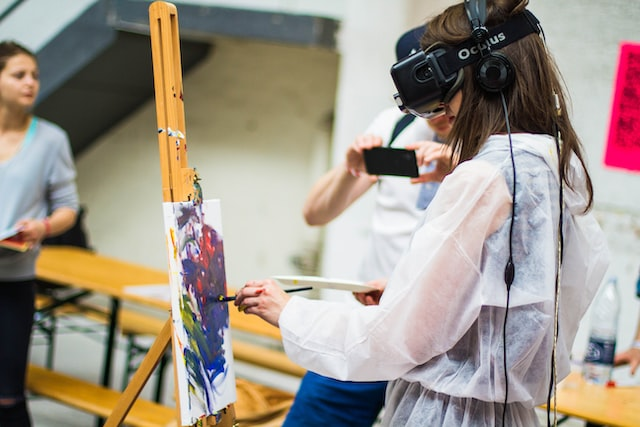
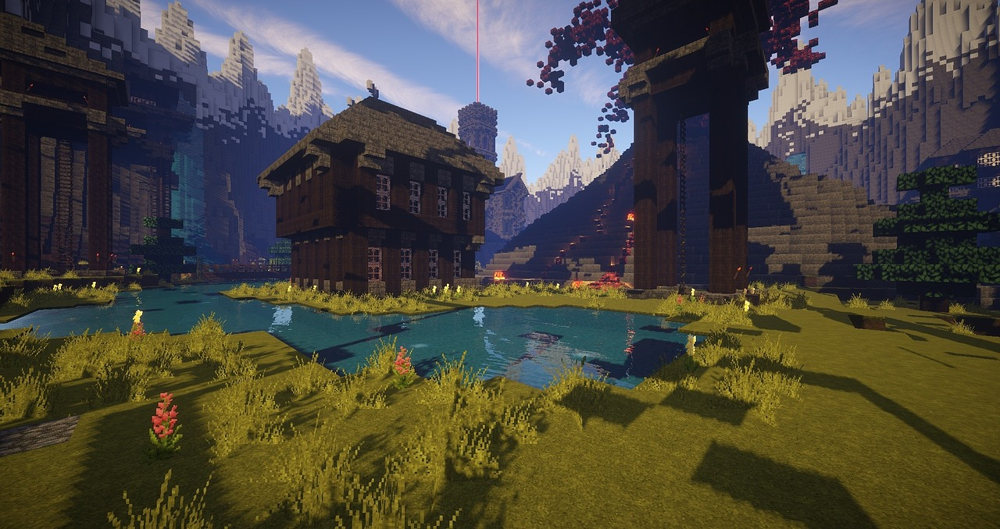

 The Power of Edutainment: How It Can Make Learning Fun and Engaging Learning doesn't have to be boring! Edutainment, a combination of education and entertainment, can make learning fun and engaging for students of all ages. By incorporating interactive activities like games, simulations, and other technology-based tools, educators can help students better understand and retain information. Edutainment can make even the most complex subjects accessible and understandable. By breaking down concepts into smaller, more digestible pieces, students can better comprehend the material being taught. Furthermore, by providing a variety of learning methods, edutainment caters to all learning styles, including visual, auditory, and kinesthetic learners. One of the most significant benefits of edutainment is that it makes learning more enjoyable. When students are engaged and having fun, they are more likely to be invested in the learning process. This leads to better retention of information and a deeper understanding of the material being taught. In short, edutainment is a powerful tool that can revolutionize the way we approach education, making it more accessible, inclusive, and enjoyable for everyone involved.
The Psychology of Edutainment: Understanding How We Learn through Play and Entertainment Did you know that play and entertainment can enhance our learning ability? This is the premise of the psychology of edutainment, which explores how we learn through fun and engaging activities. By understanding this concept, we can create more effective and enjoyable learning experiences for students. The psychology of edutainment shows that when we are engaged in entertaining activities, our brains release dopamine, a neurotransmitter associated with pleasure and reward. This creates a positive emotional state that enhances our ability to learn and remember information. It also promotes motivation and engagement, making us more receptive to the learning experience. Additionally, edutainment often involves experiential learning, which allows us to apply what we learn in a real-world context, making the information more meaningful and memorable. In conclusion, the psychology of edutainment is a powerful tool that can revolutionize the way we approach education. By incorporating fun and engaging activities into the learning process, we can create more effective and enjoyable learning experiences for students of all ages.
 From Minecraft to Math: The Power of Edutainment in Modern Education Remember when your parents used to scold you for playing video games all day? Well, it turns out that they were wrong - playing video games can actually be good for you! With the rise of edutainment, even video games can be turned into powerful tools for learning. From Minecraft to math, edutainment is changing the game in modern education. By using games and other forms of edutainment, students can engage with learning in a way that feels less like work and more like play. This makes it easier to stay motivated and focused, and helps to create a positive emotional state that enhances our ability to learn and remember information. Plus, with the vast array of games and apps available, edutainment can be tailored to fit the needs and interests of virtually any student. In conclusion, edutainment is a game-changer in modern education. By incorporating fun and engaging activities into the learning process, we can create more effective and enjoyable learning experiences for students. So whether you're exploring a virtual world or practicing math skills with a game, remember - learning doesn't have to be boring!
Edutainment Hacks: How to Make Learning Fun and Memorable Are you tired of traditional study methods that leave you feeling bored and uninterested? Well, look no further because we have some edutainment hacks that will make learning fun and memorable! One hack is to turn your notes into a game. Whether it's a trivia game or a matching game, turning your notes into a fun activity can make learning more engaging and interactive. Plus, it can help you remember the information better. Another hack is to use visuals like diagrams, charts, and graphs. Visuals can help simplify complex concepts and make them easier to understand. Plus, they can be a welcome break from the monotony of reading and note-taking. So, why not try these edutainment hacks and make learning a little less painful? With a little creativity and imagination, you can turn any subject into a fun and exciting learning experience.
Say Goodbye to Boring Lectures: Edutainment is the Future of Engaging Learning Do you remember falling asleep during a boring lecture? Yeah, we've all been there. But guess what? Edutainment is the future of engaging learning! By incorporating entertainment into the learning process, you can make education a fun and exciting experience. This means incorporating music, games, videos, and interactive activities into the classroom. Not only will this keep students engaged, but it will also improve their retention and comprehension of the material. Edutainment isn't just for the classroom either - it can be applied to online learning as well. With the rise of e-learning, it's important to make sure that students are still engaged and motivated to learn. By using edutainment techniques like gamification and interactive videos, online learning can become just as engaging as traditional classroom learning. So, say goodbye to boring lectures and embrace edutainment as the future of engaging learning!